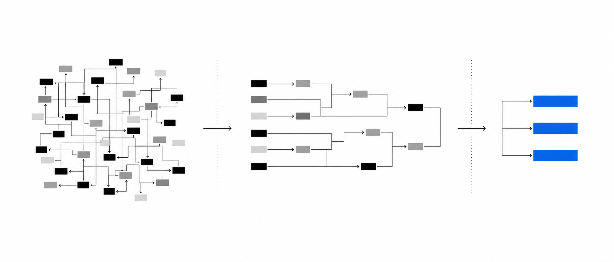
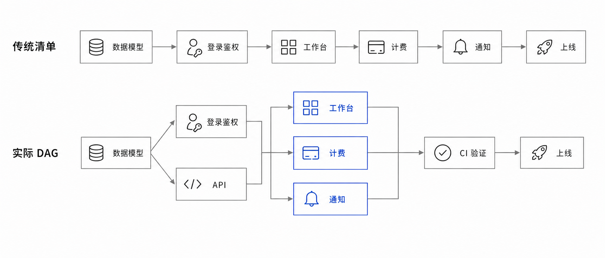
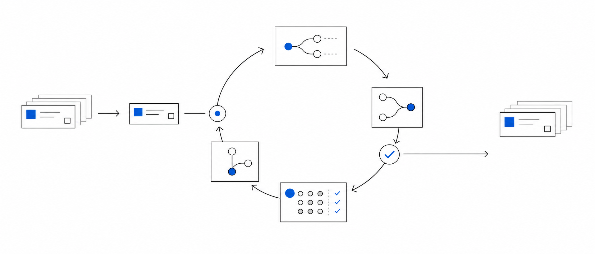

父 Issue 定义边界
一个清晰业务模块、交付目标、验收口径和子 Issue 索引。
MANAGEMENT VIEW
大量 Issue 不再平铺
能做、要等、会解锁
只领取依赖已满足的节点

清单假设所有模块顺序执行
工作台、计费、通知同时推进
CI 验证后统一进入上线
需求模糊时，拆 Issue 只会把模糊放大；AI 会沿着错误理解高速制造分支和 PR。
一个清晰业务模块、交付目标、验收口径和子 Issue 索引。
MANAGEMENT VIEW可独立实现、独立验收、独立开 PR，范围不跨模块漂移。
EXECUTION UNIT只展示依赖已满足、现在可以安全开工的任务。
SCHEDULING OUTPUT一个可执行的 GitHub Issue
depends_on 或 blocks 依赖方向
必须优先完成的上游任务
等待上游解锁的后续任务
从基础能力到最终交付的依赖链
互相等待的循环依赖，必须消除
以登录功能为例：前端、后端和测试共同依赖的，并不是某一方“全部完成”，而是接口输入、输出和错误码已经明确。
登录成功、失败和异常分别是什么结果？
请求字段、响应结构、错误码与示例固定。
页面、状态与交互不再等待真实接口。
READY实现逻辑，同时保持接口结构稳定。
READY根据输入输出准备正常与异常用例。
READY依赖已满足，让 Agent 或开发者领取。
必须写清正在等谁，不提前改核心文件。
已有 PR，优先处理 CI、Review 和合并。
合并并关闭后，立即解锁下一批 Ready。
冲突缠绕的 PR
依赖边界没有提前明确
上游、冲突、合并顺序
并发不是一个 Agent 同时乱做十件事，而是多个执行者各自领取互不冲突的 Ready Issue。
上下文、分支、检查和复盘来回切换，AI 的工作记忆会被污染。
另一个父 Issue 就新开终端，重新加载需求、子 Issue 和局部 DAG。

真实状态发生变化
重新读取 Issue 与依赖
生成下一批可领取任务
Issue 不能 depends_on 自己
A → B → C → A 必须失败
depends_on 指向真实 Issue
Closed 与 Blocked 不能矛盾
depends_on 使用统一格式
报告具体 Issue 与错误边
列出 Issue / PR，标出依赖、重复和首批 Ready。
分别生成 Epic 主 DAG 与当前 Epic 子图。
Ready / Blocked / Review / Done。
复述目标、范围、验收，只修改相关文件。
读取 PR、CI、Issue，输出新 Ready Queue。
定位错误依赖边，必要时暂停下游。
DAG 不是额外的项目管理负担，而是把并发开发变成可计算、可审查、可持续解锁的系统。
先确认目标、范围、边界与验收，再拆任务。
把上游依赖定义在能释放并行的最小稳定层。
系统先告诉你现在能做什么，再决定由谁领取。